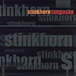

Home Artist links Label link

Stinkhorn - Tunguska
| Artist: | Stinkhorn |
| Title: | Tunguska |
| Label: | Stinkhorn/Omnitone CD002 |
| Length(s): | 59 minutes |
| Year(s) of release: | 2001 |
| Month of review: | [01/2003] |
Line up
John Morris - bass
Michael Monhart - sax
Howard Ouchi - drums
Brian Heaney - guitar
Tracks
| 1) | Tunguska | 3.35
|
| 2) | Sonny's Delight | 5.03
|
| 3) | Psalm X | 4.45
|
| 4) | Howard Sez | 0.54
|
| 5) | Awa Nights | 3.25
|
| 6) | Masha | 2.48
|
| 7) | Summer Salt | 4.39
|
| 8) | Mongolian Pig Driver | 3.52
|
| 9) | Blue Cosmos | 2.13
|
| 10) | A Minor Matter | 3.13
|
| 11) | Gina | 10.15
|
| 12) | Her Name Is Danny | 3.18
|
| 13) | Road Rage | 1.25
|
| 14) | Ancient Baby | 5.45
|
| 15) | The Last Detail | 3.16
|
Summary
Tunguska is the second album by this avant jazz outfit from Seattle, who managed to become part of the demo for Windows XP Media Center Edition.
The music
As already mentioned, this band is avant jazz, or at least mainly so. That has resulted in a bit of stuff dominated by sax or guitar (such as Tunguska, Mongolian Pig Driver or Her Name Is Danny), at times more shrill (Road Rage) or experimental than it is musical. Then there's, of course, the generally neurotic stuff: Summer Salt. Still, there's ample room for more reflexive moments in nice and, at least nearly, peaceful tracks such as Psalm X, A MInor Matter, Gina or Masha's subtle eastern influences. There are moments at which I think we could drift in the direction of, say, a Dreadnaught, but the tongue in cheekness of that band remains far from us.
Conclusion
With this album I find what I often find with avant jazz stuff with a lot of sax: things can get pretty shrilly out there. Having said that, the balance on this album leans towards music more friendly on the ear, resulting in a pretty good album in the genre, but not something I'd expect to play very often.
© Roberto Lambooy